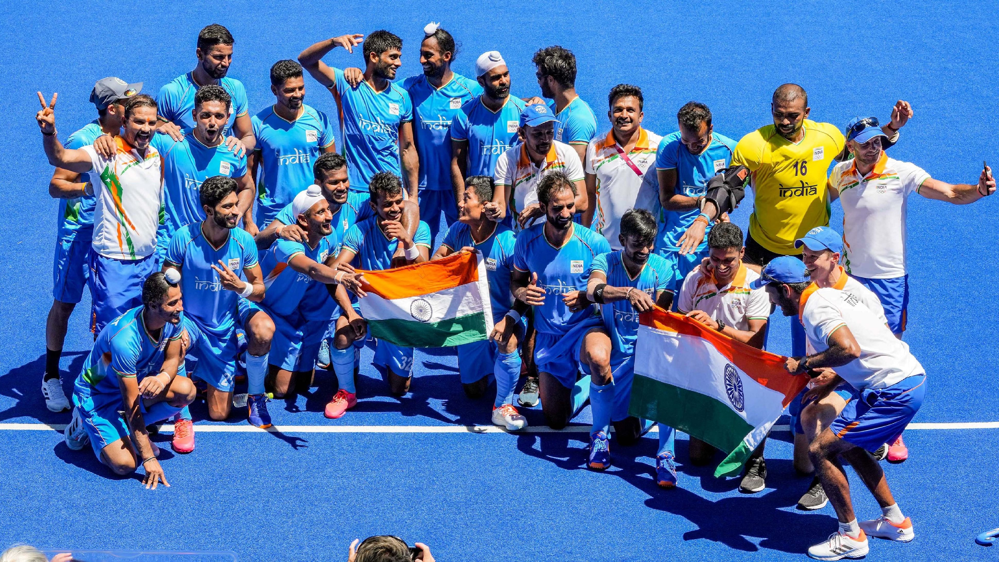
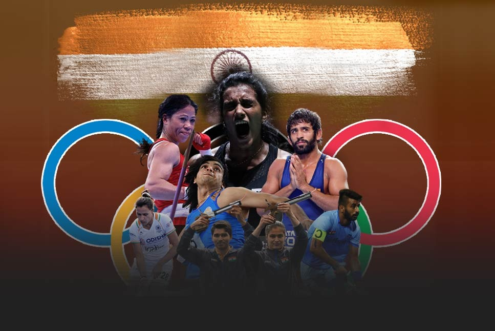
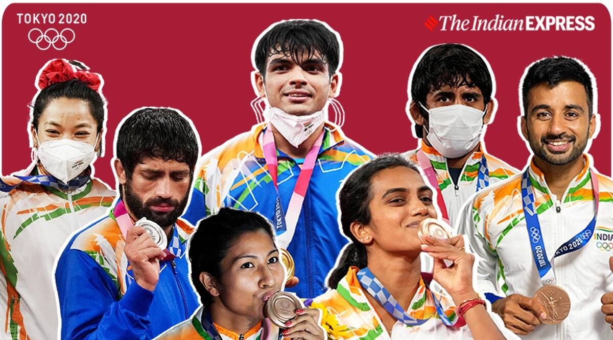
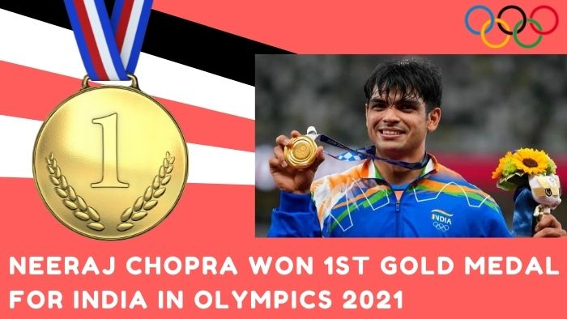
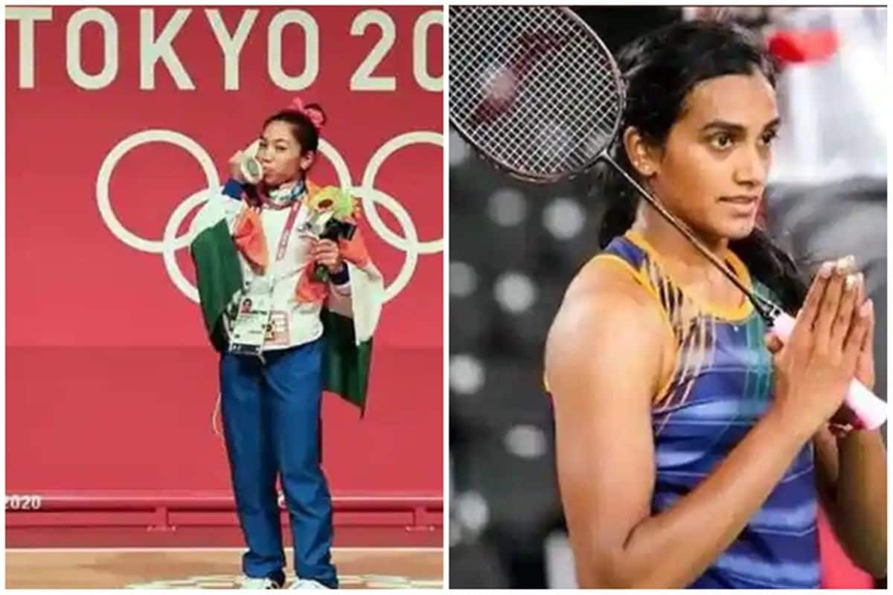

The 2020 Summer Olympics, officially the Games of the XXXII Olympiad and branded as Tokyo 2020, was an international multi-sport event held from 23 July to 8 August 2021 in Tokyo, Japan, with some preliminary events that began on 21 July
 India competed at the 2020 Summer Olympics in Tokyo, Japan. Originally scheduled to take place from 24 July to 9 August 2020, the games were postponed to 23 July to 8 August 2021, due to the COVID-19 pandemic. India has appeared in every edition of the Summer Olympics since 1920, although it made its official debut at the 1900 Summer Olympics in Paris.
  The nation sent its largest-ever contingent of 126 competitors to the 2020 Games. To date, the 2020 Summer Olympics are the most successful Games for India since its first regular Olympics appearance in 1920,with Indian Olympians winning 7 medals (1 gold, 2 silver and 4 bronze). The Indian contingent participated in a record 69 events, and earned medals across 18 athletic disciplines.